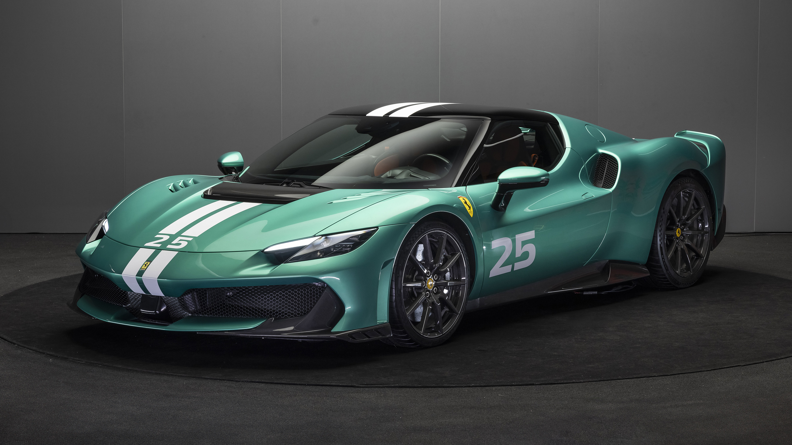

Ferrari 296 Speciale A
Among the most distinguishing features at the rear of the car are the side wings, which merge two concepts derived from motorsports – the lateral flaps of the FXX K and the outer profile of the bumper of the 296 Challenge – into a single element. These features have a curved geometry, with a vertical blade optimising wake management to reduce drag, and a specially contoured horizontal surface which generates downforce. The positions of these side wings on the tail also allows them to interact with the cooling air flow from the radiators, improving the cooling efficiency of the radiators themselves. These features complement the functions of the active spoiler.


The 296 Speciale A features the extra boost control strategy, which takes full advantage of the capabilities of the electric drive system to deliver a performance boost for a limited period of time. The purpose of the extra boost function, which is only available in the ‘Qualify’ eManettino setting, is to deliver a power boost when exiting corners to help reduce lap times. A curved indicator on the instrument panel, placed on the right hand side of the tachometer, informs the driver of the available boost power reserve . At the Fiorano circuit, for instance, extra boost can be used 14 times over two laps, while at Mugello, the function allows for a total of 15 boost bursts over a single lap.TYRESA dedicated version of the Michelin Pilot Sport Cup2 tyre has been developed for the 296 Speciale A, which benefits from experience gained with the F80. This tyre optimises the dynamics and usability of the car in a wide variety of conditions with a specific tread design and carcass structure. The result is perfect balance and extraordinarily rapid response in all driving conditions.